Orguine
Organize pastas bagunçadas (como Downloads e Área de Trabalho) em poucos cliques, vendo antes como tudo vai ficar. Com backup, proteção de arquivos sensíveis e desfazer com um clique.
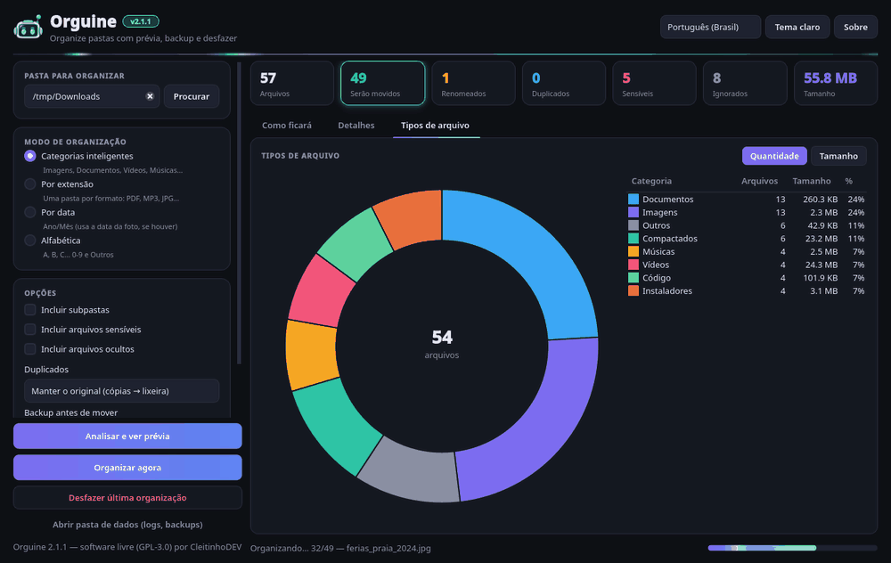
Um organizador de pastas que não te dá sustos
O Orguine lê uma pasta, separa os arquivos em pastas (por categoria, extensão, data ou letra) e mostra uma prévia "como ficará". Nada é movido até você confirmar. Ele nunca sobrescreve nada, deixa os arquivos importantes no lugar e guarda um diário para você desfazer depois.
Prévia antes de tudo
Árvore com as pastas que serão criadas, tabela de detalhes e gráfico de tipos. Ela se atualiza sozinha quando você muda uma opção.
4 modos
Categorias inteligentes, por extensão, por data (Ano/Mês, com EXIF nas fotos) e alfabética.
Duplicados de verdade
Compara o conteúdo (SHA-256), não só o nome. As cópias podem ir para a lixeira do sistema.
Seguro e reversível
Nunca sobrescreve, protege arquivos sensíveis, faz backup opcional e desfaz com um clique.
Baixe e abra: não precisa instalar
Cada versão é um arquivo único: não precisa instalar Python nem nada mais. Os botões abaixo sempre baixam a versão mais recente (atual: v—).
Windows 10/11 (64 bits)
- Baixe o arquivo .exe e dê dois cliques nele.
- Se aparecer "O Windows protegeu o computador" (SmartScreen), clique em Mais informações → Executar assim mesmo.
- Pronto! Dá para criar um atalho para ele onde quiser.
Linux (x86_64)
- Baixe o arquivo (ele não tem extensão).
- Dê permissão de execução:
chmod +x Orguine-linux-x86_64 - Abra com
./Orguine-linux-x86_64, ou com dois cliques no gerenciador de arquivos.
macOS (Apple Silicon)
- Baixe e descompacte o .zip: aparece o app Orguine.
- Na primeira vez, clique com o botão direito no app → Abrir → Abrir. É o Gatekeeper avisando que o app não é assinado.
- Se ainda não abrir: Ajustes do Sistema → Privacidade e Segurança → Abrir Mesmo Assim.
.sha256 na página da versão para você conferir a integridade.pip install -e ".[exif]" e depois python -m orguine.Passo a passo, do começo ao fim
O caminho é sempre o mesmo: escolher a pasta → ajustar → ver a prévia → organizar. E, se mudar de ideia, desfazer.
Escolha a pasta
Clique em Procurar ou arraste uma pasta para a janela. A sua pasta de Downloads é um ótimo começo.
Pastas do sistema (como C:\Windows ou /usr) são bloqueadas. Se você escolher a sua pasta pessoal inteira, o Orguine pede para digitar ORGANIZAR antes de mexer em qualquer coisa.
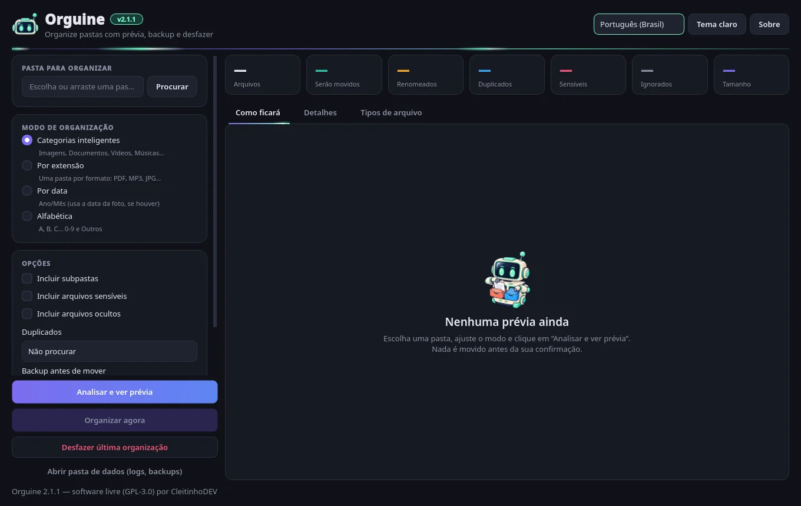
Escolha o modo de organização
- Categorias inteligentes: Imagens, Documentos, Vídeos, Músicas, Compactados, Instaladores, Código e Outros.
- Por extensão: uma pasta por formato (PDF, MP3, JPG…).
- Por data: Ano/Mês. Nas fotos, usa a data EXIF quando ela existe.
- Alfabética: A–Z, 0-9 e Outros.
Veja exemplos de cada um na seção Modos.
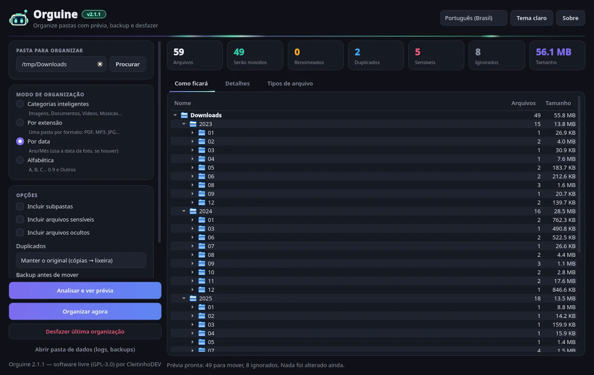
Ajuste as opções
- Incluir subpastas: organiza também o que está dentro das subpastas. Pastas de projetos nunca são desmontadas.
- Incluir arquivos sensíveis: desmarcado por padrão (chaves, senhas,
.env…). - Incluir arquivos ocultos: também desmarcado por padrão.
- Duplicados: não procurar, detectar e deixar no lugar, manter o mais novo ou manter o original (as cópias vão para a lixeira).
- Backup antes de mover: sem backup, arquivo ZIP ou cópia em pasta.
- Animações neon: liga ou desliga os efeitos visuais.
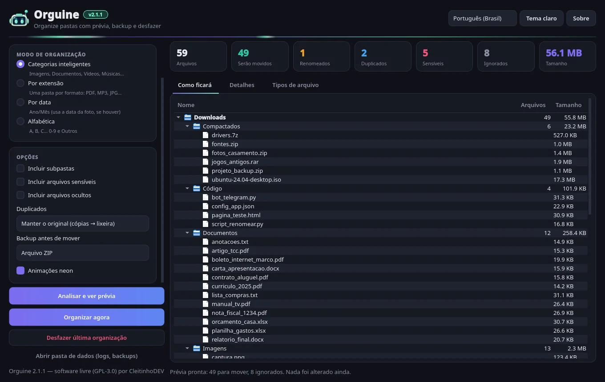
Veja a prévia "como ficará"
Clique em Analisar e ver prévia. Os cartões no topo mostram quantos arquivos serão movidos e renomeados, e quantos são duplicados, sensíveis e ignorados. Há três abas:
- Como ficará: a árvore com as pastas novas, o que vai para a lixeira e o que permanece no lugar.
- Detalhes: tabela com busca, filtros e o motivo de cada decisão.
- Tipos de arquivo: gráfico de rosca por quantidade ou por tamanho.
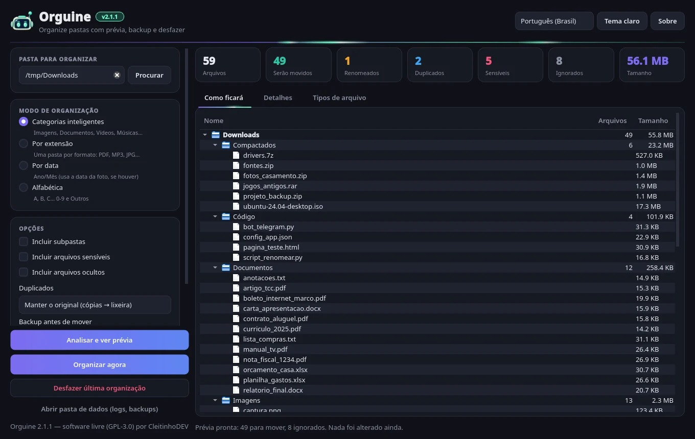
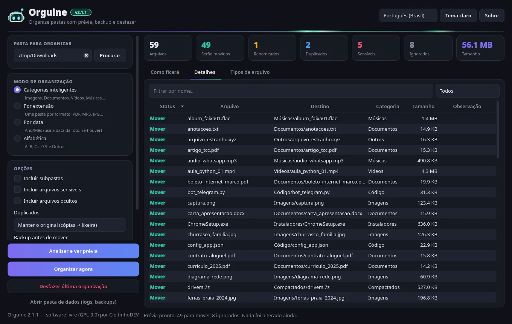
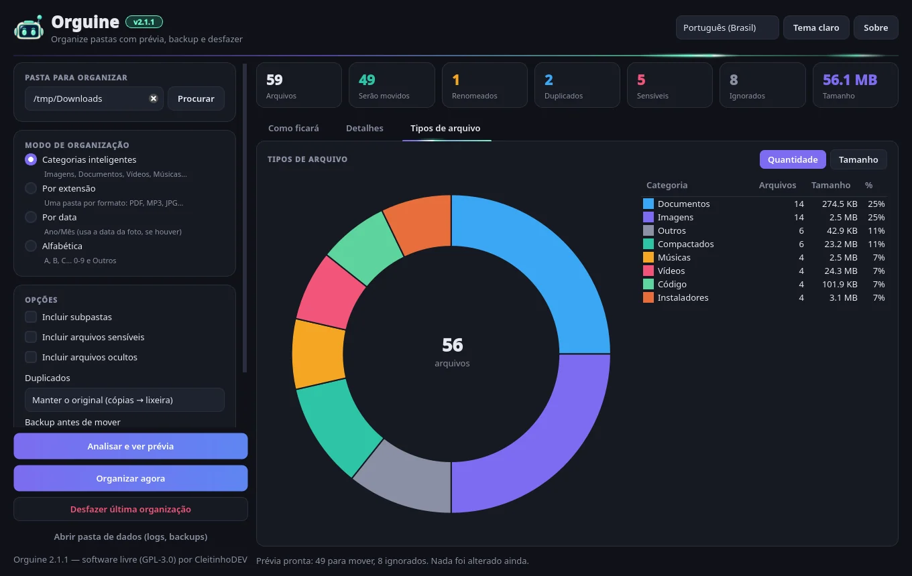
Organize
Clique em Organizar agora. Antes de começar, o Orguine mostra um resumo: quantos arquivos serão movidos e para quantas pastas, quantos serão renomeados para não sobrescrever nada, quantos duplicados irão para a lixeira e qual backup será feito.
Se houver arquivos sensíveis incluídos, aparece um aviso listando cada um. Se você responder "Não", eles ficam onde estão. A organização roda em segundo plano, com barra de progresso e botão Cancelar.
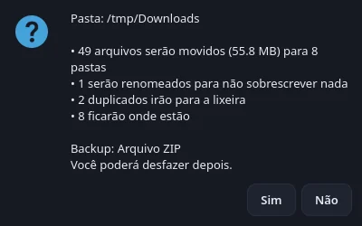
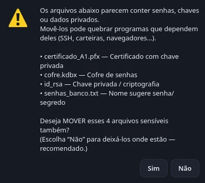
Confira o resultado
No fim aparece um resumo com o número de arquivos movidos, renomeados, enviados para a lixeira, ignorados e com erros. Tudo fica registrado num log, que você encontra pelo botão Abrir pasta de dados.
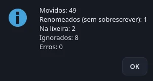
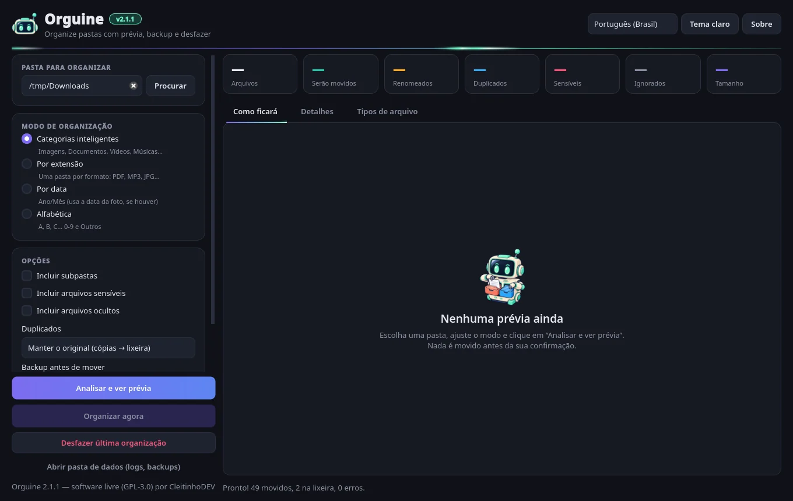
Mudou de ideia? Desfaça
Clique em Desfazer última organização. Os arquivos voltam para o lugar e o nome originais, e as pastas criadas são removidas se ficarem vazias.
Se já existir outro arquivo com o nome original, o que volta recebe (1) no nome, para nada ser sobrescrito. Os duplicados que foram para a lixeira precisam ser restaurados pela lixeira do sistema, e o Orguine avisa quantos são.
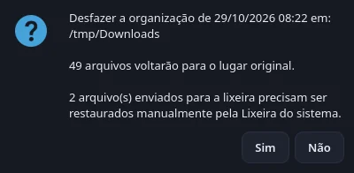
Quatro jeitos de arrumar a casa
Troque de modo à vontade: a prévia se recalcula na hora, e nada é movido até você confirmar.
Categorias inteligentes (padrão)
Agrupa por tipo de conteúdo: Imagens, Documentos, Vídeos, Músicas, Compactados, Instaladores e Código. O que não se encaixa vai para Outros. Dá para personalizar nomes, cores e extensões com um rules.json (veja as dúvidas).
Por extensão
Uma pasta por formato, com o nome da extensão em maiúsculas. Arquivos sem extensão vão para Sem extensão. Na linha de comando, o modo se chama extensao (ou tipo).
Por data (Ano/Mês)
Usa a data de modificação do arquivo. Nas fotos, usa a data em que a foto foi tirada (EXIF), quando ela existe. É ótimo para as fotos do celular. Na linha de comando, --sem-exif usa só a data de modificação.
Alfabética
Pela primeira letra do nome, de A a Z. Os acentos são ignorados, então Ótimo.txt vai para O. Nomes que começam com número vão para 0-9, e os demais para Outros.
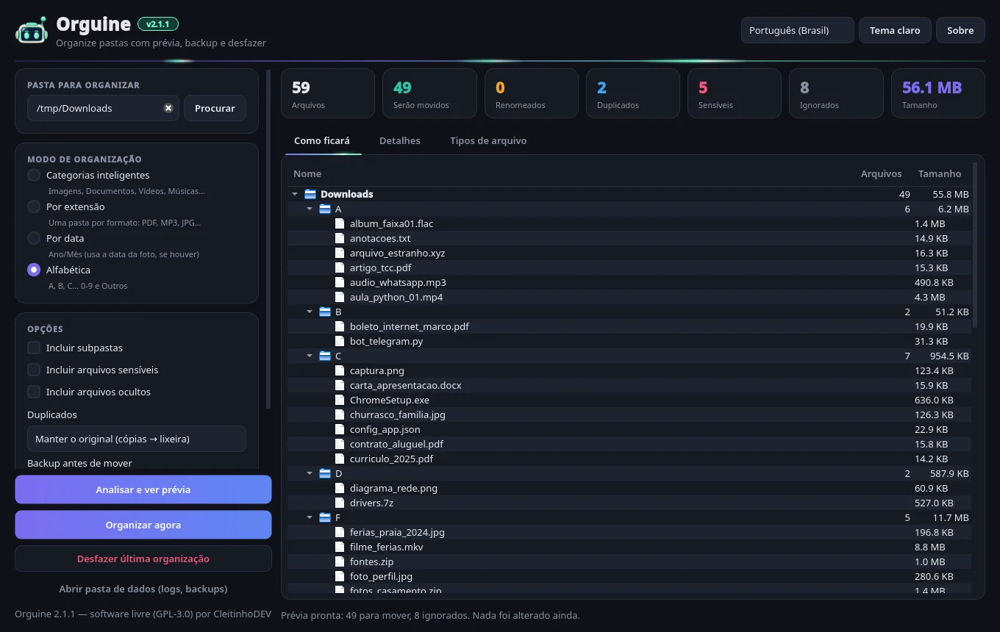
Feito para nunca custar um arquivo
Organizar não pode ser arriscado. Por isso o Orguine combina várias proteções:
Prévia primeiro
Nada é movido antes de você ver o resultado e confirmar.
Nunca sobrescreve
Se já existe um arquivo com o mesmo nome no destino, o novo vira nome (1).ext, nome (2).ext… Maiúsculas e minúsculas contam como o mesmo nome, como no Windows e no macOS.
Pastas perigosas bloqueadas
Raiz do disco, C:\Windows, Program Files, /usr, /etc, AppData, ~/.ssh, ~/.config… Para a pasta pessoal inteira, é preciso digitar ORGANIZAR.
Sensíveis ficam no lugar
Chaves (id_rsa, .pem, .pfx), .env, cofres de senha (.kdbx), carteiras, dados de navegador e nomes como "senha" ou "password" não são movidos por padrão. E só vão para a lixeira depois de um aviso reforçado.
Sistema e ocultos ignorados
desktop.ini, Thumbs.db, .DS_Store, downloads incompletos (.crdownload, .part), temporários, links simbólicos e o próprio executável do Orguine. Os ocultos só entram se você marcar a opção.
Lixeira, nunca apagar
Duplicados vão para a lixeira do sistema (via Send2Trash). O Orguine não apaga nada de vez.
Backup opcional
Um ZIP (com a integridade conferida) ou uma cópia da pasta, feito antes de mover. Se o backup falhar, nada é movido.
Diário de desfazer
Cada passo é gravado num diário antes de acontecer. Se o programa fechar no meio, o desfazer ainda devolve tudo aos nomes e lugares originais.
Conferência e log
Se um arquivo mudou entre a prévia e a organização, ele não é movido e aparece como erro. Tudo fica num log com rotação automática.
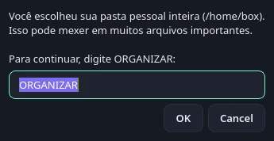
Encontra cópias pelo conteúdo
Dois arquivos com nomes diferentes podem ser iguais (curriculo_2025.pdf e curriculo_2025 (copia).pdf). O Orguine compara o conteúdo em etapas, para ser rápido mesmo com muitos arquivos:
| Opção na janela | O que acontece | Na CLI |
|---|---|---|
| Não procurar | Duplicados não são verificados (padrão). | none |
| Detectar e deixar no lugar | Organiza o mais antigo; as cópias ficam onde estão. | skip |
| Manter o mais novo | Organiza o mais novo; os outros vão para a lixeira. | newest |
| Manter o original | Organiza o mais antigo; as cópias vão para a lixeira. | trash |
Nomes de pastas e pastas de projetos
Pastas que já existem são reaproveitadas
Se já existe uma pasta Imagens (ou imagens, com outra grafia), o Orguine coloca os arquivos dentro dela, sem criar uma "Imagens (2)".
O sufixo (2) só aparece quando o nome está ocupado por um arquivo que vai continuar no lugar, como um arquivo sensível chamado "PIN". Se esse arquivo também vai ser organizado, a pasta usa o nome normal. Por exemplo, um arquivo chamado A vai para A/A.
Projetos nunca são desmontados
Com Incluir subpastas ligado, o Orguine pula as pastas que parecem projetos de software, ou seja, as que têm .git, .hg, .svn, package.json, Cargo.toml, node_modules ou pyvenv.cfg. Pastas como __pycache__, .venv e a Lixeira do Windows também ficam de fora.
Se a própria pasta escolhida parecer um projeto, a confirmação mostra um alerta e a resposta padrão passa a ser "Não".
Tema claro, escuro e neon
A cor #6ff8c8 do robozinho combina com o roxo do tema. Faixas de luz correm no cabeçalho, na aba ativa e na barra de progresso. As animações são leves, pausam com a janela minimizada e podem ser desligadas em Opções → Animações neon. A interface está em português (Brasil) e inglês: escolha na caixa de idioma no canto superior direito.
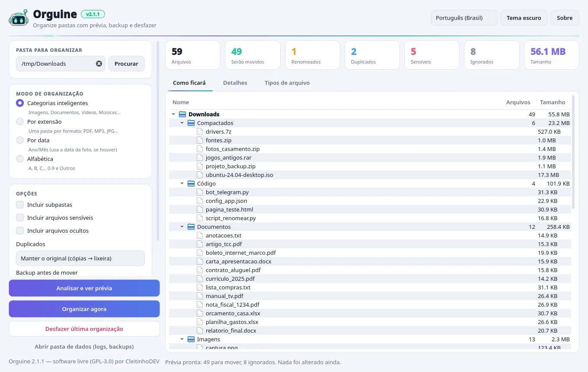
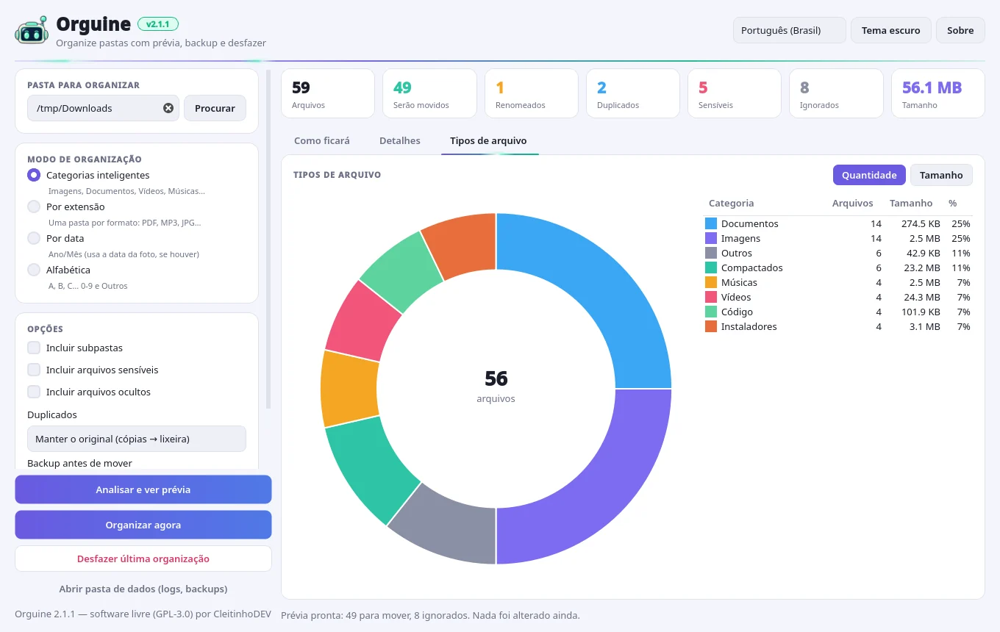
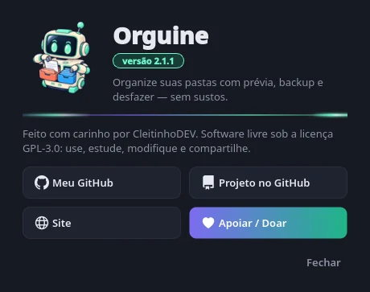
Linha de comando
Rodando pelo código-fonte, use python -m orguine seguido de uma pasta (sem argumentos, ele abre a janela). Depois do pip install, o comando orguine-cli faz o mesmo.
# só ver a prévia (não mexe em nada) $ python -m orguine ~/Downloads --dry-run # por categoria, com backup ZIP e cópias para a lixeira $ python -m orguine ~/Downloads --backup zip --duplicados trash # por data, incluindo subpastas, sem perguntar $ python -m orguine ~/Fotos --modo data --recursivo --sim # desfazer a última organização $ python -m orguine --desfazer
| Opção | O que faz |
|---|---|
--dry-run, -n | Só mostra a prévia, não move nada. |
--modo, -m | categoria (padrão), extensao (ou tipo), data, abc. |
--recursivo, -r | Inclui subpastas. |
--duplicados | none (padrão), skip, newest, trash. |
--backup | none (padrão), zip, folder. |
--sim, -y | Não pergunta antes de mover. Atenção: também pula a confirmação "ORGANIZAR" da pasta pessoal. |
--desfazer | Desfaz a última organização. |
--incluir-sensiveis, --incluir-ocultos | Também move arquivos sensíveis ou ocultos. |
--permitir-lixeira-sensiveis | Permite mandar sensíveis duplicados para a lixeira. |
--sem-exif | No modo data, usa só a data de modificação. |
--regras arquivo.json | Usa um arquivo de categorias personalizado. |
--lang | pt_BR (padrão) ou en. |
Perguntas e respostas
O Orguine é grátis? Precisa de internet?
É grátis e de código aberto (licença GPL-3.0). Ele organiza tudo no seu computador, sem precisar de internet: os arquivos não são enviados para lugar nenhum.
O Windows disse que "protegeu o computador". É vírus?
Não. É o SmartScreen avisando que o executável é novo e não tem assinatura digital paga. Clique em Mais informações → Executar assim mesmo. Se quiser, confira o .sha256 na página da versão ou leia o código-fonte.
Ele pode apagar ou sobrescrever meus arquivos?
Não. Ele só move arquivos e nunca sobrescreve: se o nome já existe no destino, acrescenta (1), (2)… Os duplicados, se você escolher, vão para a lixeira do sistema e nunca são apagados de vez.
Como desfaço uma organização?
Clique em Desfazer última organização (ou use --desfazer na linha de comando). Os arquivos voltam para o lugar e o nome originais. Os duplicados enviados para a lixeira precisam ser restaurados pela lixeira do sistema, e o Orguine avisa quantos são.
Por que alguns arquivos "permanecem no lugar"?
São arquivos protegidos ou ignorados: sensíveis (chaves, senhas, .env…), ocultos, de sistema (desktop.ini, Thumbs.db), downloads incompletos, links simbólicos ou cópias duplicadas que você mandou deixar no lugar. A aba Detalhes mostra o motivo de cada um.
Por que minha pasta virou "Documentos (2)"?
Porque já existe um arquivo (não uma pasta) chamado "Documentos" que vai continuar onde está, por exemplo por ser sensível ou ignorado. Se fosse uma pasta, ela seria reaproveitada. E se o arquivo também fosse organizado, a pasta usaria o nome normal.
Posso mudar as categorias e as extensões?
Sim. Copie o default_rules.json do repositório (fica em orguine/resources/) para um arquivo rules.json dentro da pasta de dados do app e edite nomes, cores e extensões. Cada categoria tem um nome por idioma (pt_BR e en). Na linha de comando, também dá para usar --regras arquivo.json.
Onde ficam os backups, os logs e o diário de desfazer?
Na pasta de dados do app, que o botão Abrir pasta de dados abre: %APPDATA%\Orguine no Windows, ~/Library/Application Support/Orguine no macOS e ~/.local/share/orguine no Linux. Para mudar o local, use a variável ORGUINE_DATA_DIR.
Como mudo o programa para inglês?
Use a caixa de idioma no canto superior direito da janela. Depois, gere a prévia de novo para que os nomes das pastas (Imagens, Documentos, Outros…) também mudem.
As animações pesam no computador?
Não. Elas usam um único temporizador leve e pausam com a janela minimizada. Dá para desligar em Opções → Animações neon ou com a variável ORGUINE_NO_ANIM=1.
Tenho um Mac com processador Intel. Funciona?
O arquivo pronto é para Macs com Apple Silicon (M1 ou mais novo). Em Macs com Intel, rode pelo código-fonte com Python 3.10+ (veja a seção Download).
Achei um problema ou tenho uma ideia. Onde falo?
Abra uma issue no GitHub. Toda ajuda é bem-vinda!
Pronto para arrumar seus Downloads?
Baixe o Orguine v—, escolha uma pasta e veja a prévia. Se não gostar, é só desfazer.